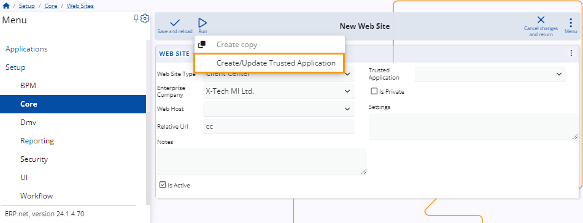
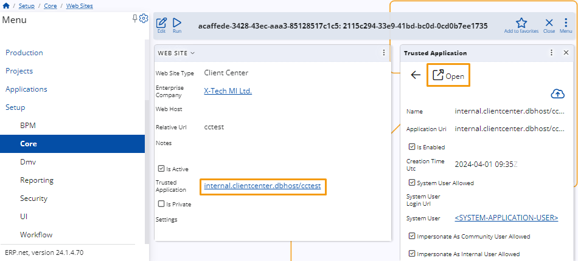

How to define a website of type Client Center
This article provides a step-by-step guide on creating a Client Center website through ERP.net.
Prerequisites
To define a website of Client Center type, navigate to the Web Sites panel within the Core section of the Setup module.
Note
You can observe and restart all sites through the Instance Manager.
Website definition
Upon accessing the New Web Site form, you need to enter relevant data into the provided fields.

The only mandatory field is Web Site Type. In this case, it should be set to Client Center.
Make sure you've selected the appropriate Enterprise Company.
Additionally, you may change the Relative Url of the website, which is set to "cc" by default.
Note
You should define a distinct site with a unique Relative URL or Host for each Enterprise Company.
It's necessary to create a trusted application to ensure the security and integrity of the new website.
To do so, click on Run, select the Create/Update Trusted Application option, and confirm with OK.

Once you complete this step, hit Save and reload.
The new Client Center website will be created and you can access its internal application details through the form.

If you've passed all the steps successfully, you may proceed to define users who can access the Client Center.
Note
The screenshots taken for this article are from v24 of the platform.